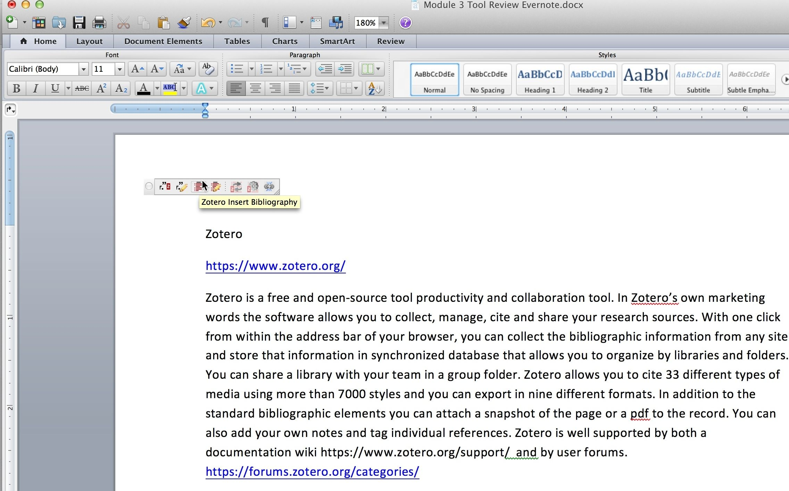

Zotero is a free and open-source productivity and collaboration tool. In Zotero’s own marketing words the software allows you to collect, manage, cite and share your research sources. With one click from within the address bar of your browser, you can collect the bibliographic information from any site and store that information in synchronized database that allows you to organize by libraries and folders. You can share a library with your team in a group folder. Zotero allows you to cite 33 different types of media using more than 7000 styles and you can export in nine different formats. In addition to the standard bibliographic elements you can attach a snapshot of the page or a pdf to the record. You can also add your own notes and tag individual references. Zotero is well supported by both a documentation wiki and by user forums.
To use the tool you will need to register and download the software. Zotero is available as a Firefox extension or as standalone software for Windows, Mac and Linux. If you want to use Zotero in a browser other than Firefox you can use a connector or bookmarklet in conjunction with the standalone software. In addition Zotero has a plugin for Micrososft Office and LibreOffice for the cite while you write functionality (pictured below).
